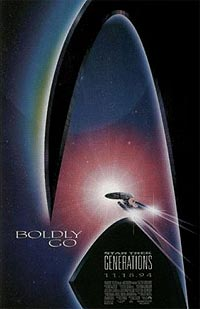
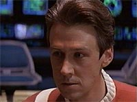
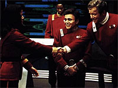
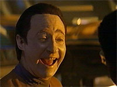
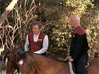
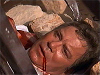
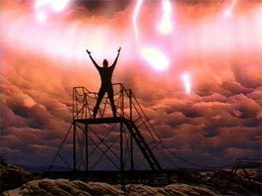

|
Generations:
passando o basto
 A
Nova Gerao, capitaneada por Jean-Luc Picard, j tinha feito
um estrondoso sucesso na TV, indo onde Jornada nas Estrelas
jamais esteve e colocando um grande sorriso nos lbios do pblico,
dos administradores e da equipe de produo da Paramount Pictures.
Ela criou uma legio de fs que viam a Srie Clssica,
mas no eram muito chegados esttica dos anos 60, ou ainda que
passaram a ver Jornada nas Estrelas nos anos 80 justamente
com a Enterprise na
verso do sculo 24. Isto fez com que desde a metade da produo
do seriado, se pensasse na realizao de uma longa metragem. Rick
Berman j estava no comando desde os ltimos anos de vida de Gene
Roddenberry, ento, reuniu Ronald Moore e Brannon Braga, dois dos
melhores roteiristas da histria da Nova Gerao para
bolar o roteiro. A
Nova Gerao, capitaneada por Jean-Luc Picard, j tinha feito
um estrondoso sucesso na TV, indo onde Jornada nas Estrelas
jamais esteve e colocando um grande sorriso nos lbios do pblico,
dos administradores e da equipe de produo da Paramount Pictures.
Ela criou uma legio de fs que viam a Srie Clssica,
mas no eram muito chegados esttica dos anos 60, ou ainda que
passaram a ver Jornada nas Estrelas nos anos 80 justamente
com a Enterprise na
verso do sculo 24. Isto fez com que desde a metade da produo
do seriado, se pensasse na realizao de uma longa metragem. Rick
Berman j estava no comando desde os ltimos anos de vida de Gene
Roddenberry, ento, reuniu Ronald Moore e Brannon Braga, dois dos
melhores roteiristas da histria da Nova Gerao para
bolar o roteiro.

Inicialmente, All
Good Things..., o ltimo episdio que foi ao ar,
seria a histria do filme, mas, como se sabe, ele encerrou a vida
televisiva do seriado e outra proposta foi adotada. Esta proposta
era fazer um filme s com o elenco da Nova Gerao, mas,
devido ao sucesso de Jornada nas Estrelas VI: a Terra
Desconhecida resolveu-se juntar as duas tripulaes da Enterprise,
deixando claro que no seria uma continuao dos filmes
anteriores, onde o elenco clssico atuaria como convidado. Mas
Leonard Nimoy, DeForest Kelley e George Takei no concordaram e
Nichelle Nichols saiu fora. Eles teriam participao pequena, o
que no valeria a pena. Nimoy foi convidado para dirigir, mas
recusou porque no poderia mexer substancialmente no roteiro.
 A
escolha da direo recaiu sobre David Carson, um
bem-sucedido diretor dos episdios da Nova Gerao.
Porm, Willian Shatner no se ops e concordou em vestir mais uma
vez o uniforme vermelho do capito Kirk, no que foi acompanhado por
Walter Koenig e James
Doohan. Shatner disse que no se importaria se a idia de matar o
capito Kirk fosse levada diante, embora estivesse muito grato
ao papel que lhe deu o maior sucesso e rendimento na sua carreira de
ator. De fato, ele estava envolvido com outros projetos, como a criao
da saga Tek War. Assim, se reuniu periodicamente com Berman,
Moore e Braga para tratar dos detalhes da trama num clima bastante
favorvel com a produo e o elenco, que o tratou com muito
respeito e carinho.
 De
todos os atores, Patrick Stewart teve mais aproximao com ele,
por causa das cenas entre Picard e Kirk, em boa parte do tempo
gravadas no lombo de um cavalo e uma gua. Como tem bastante experincia
com estes animais, Shatner deu boas dicas a Stewart para que se
sentisse mais vontade com eles. E, claro, fez questo de que
a sua gua de estimao, Great Belles of Fire, participasse,
facilitando a gravao e a vida do diretor.
Stewart afirmou que
se sentiu bastante gratificado por trabalhar de maneira bem
entrosada com Shatner e Malcolm McDowell, que interpretou o vilo
Dr. Soran, o assassino de Kirk. Stewart ressaltou a boa qumica
entre eles, responsvel pelo bom resultado dramtico no planeta
Veridian III. McDowell amou interpretar seu personagem de tal forma
que at hoje anda por a com o cabelo claro e curto e cara de meio
demente.
 O
resultado do filme foi considerado muito bom pelos produtores, mas
houve uma modificao de ltima hora, pois o pblico-teste no
gostou de ver Kirk morrer com um disparo do feiser de Soran. As
cenas foram refeitas e o resultado foi o que se viu nas telas, com
Kirk despencando da plataforma onde lutava contra o seu algoz.
Picard tenta socorr-lo, mas o golpe foi fatal. As ltimas
palavras de Kirk expressam o sentimento de satisfao e espanto
com o que haveria de acontecer... Na verdade, esta foi a segunda
morte (?) de Kirk, j que a primeira foi na Enterprise-B
h quase oito dcadas atrs, tentando salvar uma nave
cheia de El-aurianos, inclusive Guinan e o dr. Soran, da destruio
de uma descarga de energia da singularidade Nexus: um lugar onde o
tempo e o espao so relativos e os sonhos viram realidade.
Como o capito da nave, John Harriman, um perfeito banana, e a
Frota Estelar tinha deixado a nave recm-construda ainda
incompleta, Kirk se oferece para resolver o problema com a ajuda de
seus escudeiros Chekov e Scott, tambm chamados para serem
homenageados no lanamento da nova verso da nave mais famosa da
Federao. Estas cenas tm a participao de Demora Sulu, filha
do ex-piloto da nave original, e de um tenente negro, interpretado
por Tim Russ, o Tuvok de Voyager.
Mas a trama s comea a fazer maior sentido com a tripulao
da Enterprise-D,
reunida setenta e cinco anos depois no holodeck na cerimnia
de promoo de Worf ao posto de tenente-comandante a bordo do
navio HMS Enterprise.
 No
meio da maior animao, Picard recebe a mensagem de que seus irmo
e sobrinho morreram num incndio na vincola da famlia em
Labarre, Frana... O capito fica transtornado pela perda dos seus
e, como se isso no bastasse, um ataque a um observatrio da
Federao pelos romulanos faz a nave rumar para investigar o
local. L est o dr. Soran tentando realizar a obsesso de muitos
de sua espcie para reverter ao tempo onde a sua famlia ainda
existia, tentando alcanar a trajetria da prxima onda Nexus. O
dr. Soran resiste a abandonar o local e detm o grupo avanado em
que esto Data e La Forge, sendo capaz de domin-los, porque Data
sentiu medo em razo de estar usando experimentalmente o seu
chip emocional. La
Forge preso e torturado pelo cientista para que revele o cdigo
dos escudos da Enterprise,
a fim de ser destruda pelas irms Duras, Lursa e BTor,
inimigas da famlia de Worf e da faco Klingon apoiada por
Picard tempos atrs. Elas eram responsveis pela maquinao de
uma estratgia de uso do trilitium para fazer uma arma que
lhes ajudasse a enfrentar o Imprio Klingon e a Federao, com a
ajuda dos Romulanos.
Atravs do visor de La Forge, elas conseguiram descobrir o cdigo
dos escudos e disparar contra a Enterprise,
derrubando-a. Picard at que entende a dor do dr. Soran, porque ele
mesmo teve perdas significativas ao longo do tempo (a chama em
que ns somos consumidos). Ele est na superfcie do planeta
tentando det-lo, seu intento falha e ele tragado para dentro do
Nexus, mas l que reencontra Guinan e conhece pessoalmente Kirk,
ocupado com afazeres domsticos como seu amor de juventude,
Antonia, seu cachorro Butler e seus cavalos.
Picard convence
Kirk a fazer a diferena, saindo do Nexus para salvar a galxia
mais uma vez. O heri da Srie Clssica resolve ajudar o
heri da Nova Gerao, mas acaba morrendo no final. A cena
de Picard enterrando o corpo de Kirk na superfcie do planeta
paradigmtica: a partir de agora, a turma da Nova Gerao
a responsvel exclusiva por levar a saga da Enterprise
adiante. Como o cinema tem uma abrangncia maior do que a TV
em todo o mundo, era a hora de deixar claro a todo o pblico
(trekker ou no) que a passagem do basto fora feita
oficialmente, apesar de que, em Jornada, sempre h
possibilidades...
 De
um modo geral parece que esta passagem no seria muito necessria.
Melhor seria ter deixado a Srie Clssica l com a
sua despedida do filme anterior e filmar uma aventura s da Nova
Gerao. Outra deciso equivocada para alguns, foi o encontro
dos dois capites trotando cavalos em vez de estarem na ponte de
comando. Dizem que esta foi uma puxada de saco de Shatner pela produo,
e que nosso gal interpretou mais a si mesmo do que Kirk neste
filme. Outros ficaram insatisfeitos com a possibilidade de uma velha
ave de rapina Klingon detonar com um disparo fatal a nau capitnia
da Federao, e, ainda por cima, perder o controle dos
estabilizadores caindo chapada no cho. Talvez seja porque isso
contribui para que ns, os colecionadores de miniaturas, compremos
sempre novos modelos da nossa querida
Enterprise, aumentando o faturamento do estdio. Houve quem
reclamasse tambm do ritmo rpido das cenas, confundindo a audincia
no aficcionada. Afinal de contas, s o amor e a dedicao dos fs
so insuficiente para sustentar o bom desempenho nas bilheterias
durante muito tempo.
Como no poderia
deixar de ser, o espao dos atores da Nova Gerao ficou
muito reduzido, mesmo com um pouco mais de participao de Data e
La Forge. A dra. Crusher caiu na gua, fez pouco mais do que ficar
aborrecida e alguns exames. Deanna Troi ofereceu o ombro para Picard
chorar e ajudou a arrasar com a nave na sua queda. Riker no fez
mais do que tentar resistir s Klingons e lamentar a destruio
da cadeira de comando.
Guinan at que teve um pouco mais de presena por conta da trama
desenvolvida (mas a atriz Whoopi Goldberg sequer foi posta nos crditos).
Worf andou pela prancha e resmungou o tempo todo de tudo o que
aconteceu e s.
De
todo modo, as coisas saram a contento de muitos, com cem milhes
de bilheteria. Isto fez Rick Berman comandar o projeto de realizao
de um novo longa-metragem protagonizado por Picard e sua turma.

Cludio
Silveira escreve regularmente sobre os filmes com
exclusividade para o Trek Brasilis
|